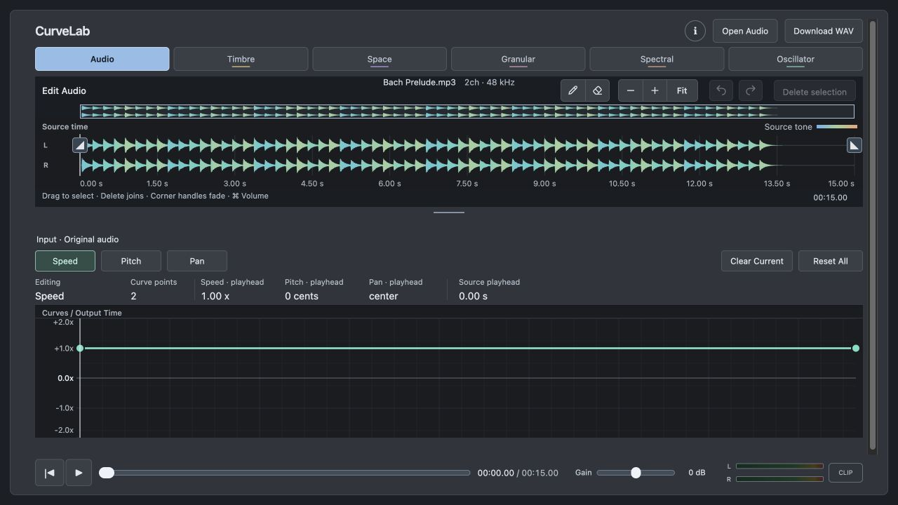
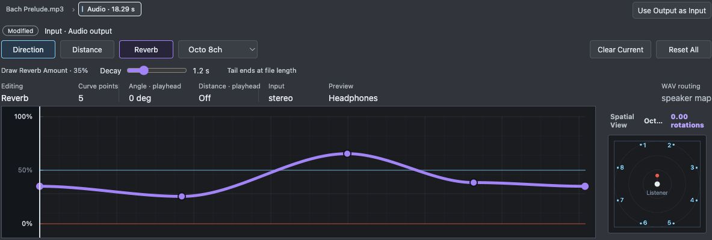
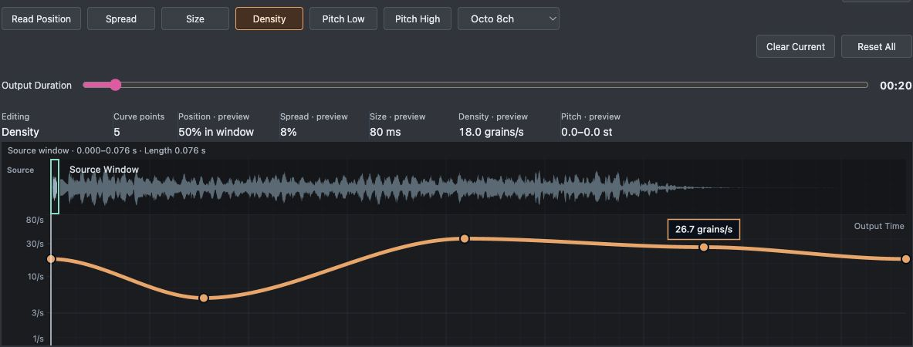
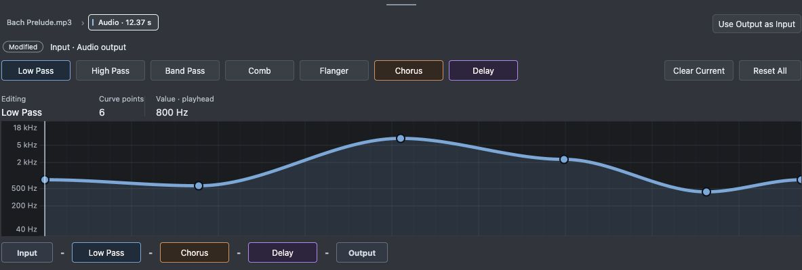
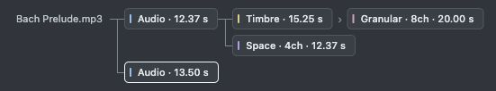

Audio
Draw separate curves for playback speed, pitch, and stereo pan. Slow down a phrase, reverse it, or hold the source at a single point.
Draw curves to shape how sound changes over time. Start with an audio file or make a sound in the Oscillator Lab.

Draw separate curves for playback speed, pitch, and stereo pan. Slow down a phrase, reverse it, or hold the source at a single point.
Arrange filters, chorus, flanger, and delay in a chain. Draw curves to sweep a filter cutoff or change how an echo repeats over time.
Draw direction and distance curves to move sound around a speaker layout. Add reverb by drawing its amount over time and setting the decay. Export stereo, 4-channel, or 8-channel WAV files.
Build textures from short grains of recorded sound. Shape their source position, size, density, spread, and pitch range with curves. Export stereo, 4-channel, or 8-channel WAV files.
Shift frequencies and stretch their spacing. Use Blur to soften spectral detail, shape harmonic relationships with Harmonicity, or hold a spectral state with Freeze.
Generate tones with curves for base frequency, frequency spread, and spectral slope, or resynthesize a recording from its partials. An impulse-response file can shape the generated sound.
For Space and Granular, browser playback and the next Lab use a stereo mix of the result.



Shape a sound in one Lab, then switch to another. CurveLab saves the changed processing as a stage and passes its result to the next Lab. Choose Use Output as Input to process the result again in the same Lab.
Select an earlier stage to reopen its input and settings. Editing that stage creates a new branch from the same input, so you can keep both versions.
In the example below, an Audio stage feeds Timbre and then Granular, with an 8-channel WAV available from Granular. Reopen the same Audio stage to start a separate path through Space for a 4-channel WAV.
Sound Chain history lasts until you close or reload the tab. Use Download WAV to keep a 24-bit audio file.
